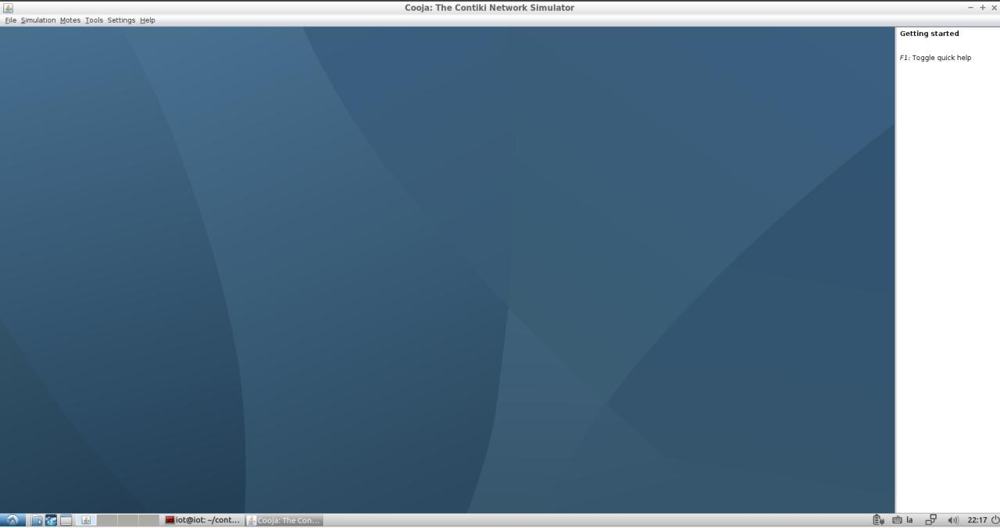

Correr el emulador¶
El emulador es un herramienta desarrollada en Java y se hará uso de
Apache Ant pare realizar la contrucción de Cooja y ejecutarlo.
Para ello debemos ir al directorio de la siguiente forma:
cd ~/contiki/tools/cooja
y ejecutar el comando:
ant run
Se debería abrir el amulador
